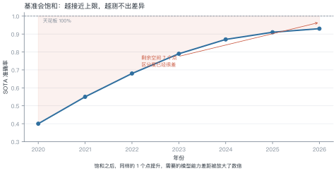
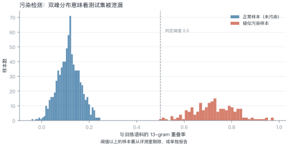
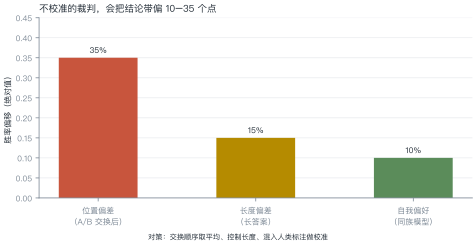
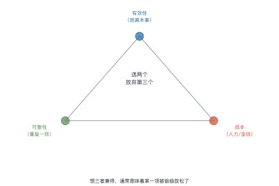

第 23 讲 评测与治理¶
本讲位置
第八部分的开篇。前面所有讲次都在讲"怎么做得更好"，本讲讲"怎么知道它真的更好了"——以及当它出问题时，谁来负责。
📅 事实核查至 2026-11
MMLU/HELM 的饱和讨论、数据污染检测、LLM-as-a-Judge 偏差研究（Zheng et al., 2023）均已核对原文。
学习目标¶
学完本讲，你应该能够：
- 判断一个 benchmark 是否已经饱和，并算出它还能撑多久；
- 用 n-gram 重叠检测数据污染，并估算污染对分数的影响；
- 说出 LLM 裁判的三种偏差及对应的校准手段；
- 用"有效性/可靠性/成本"三角解释评测方案的取舍。
0 直觉：基准会饱和¶
一个新基准刚出现时，模型只能考 40 分，区分度极高。两年后大家都考 90 分，剩下的 10 分里全是噪声——基准就死了。
这不是模型的问题，是基准的宿命：任何固定测试集，最终都会被"训进去"。
一句话总结
评测的核心矛盾：基准会饱和、测试集会泄漏、裁判会有偏。三者都只能缓解，不能消除。
1 谱系与饱和¶

例 23.1 算一下还能撑多久¶
某基准：2024 年 0.87，2026 年 0.93，两年涨 6 点，年均 3 点。
剩余空间：\(1.00-0.93=0.07\)，即 7 点。
但实际会更短：越接近上限，提升越难（边际递减），所以 2.3 年是乐观估计。
饱和之后怎么办：
| 做法 | 说明 |
|---|---|
| 换更难的基准 | 治标，新基准也会饱和 |
| 加长尾/对抗样本 | 增加区分度 |
| 改评测方式 | 从"答对率"改成"人工偏好" |
| 私有测试集 | 不公开，延缓污染 |
2 数据污染¶

污染怎么发生：训练语料从互联网抓取，测试集也在互联网上。抓的时候不知道哪些是测试题。
三种检测方法：
| 方法 | 做法 | 灵敏度 |
|---|---|---|
| n-gram 重叠 | 算最长公共子串 / 13-gram 重叠率 | 中 |
| 困惑度异常 | 污染样本的 loss 明显偏低 | 中 |
| 改写检测 | 用同义改写后再测，看分数掉多少 | 高 |
例 23.2 算污染对分数的影响¶
1000 条测试样本，检测出 200 条污染（20%）。
污染样本平均正确率 0.95，干净样本 0.80：
剔除后：
虚高 3 个点。在饱和区间里，3 个点足以改变排名。
从这个例子里能读出三件事
- 污染率越高，虚高越明显：20% 污染带来 3 点，40% 就是 6 点；
- 污染样本的正确率越高，越可疑：0.95 接近满分，通常意味着"见过原题"；
- 剔除后要重算排名：很多"超越"在剔除后消失。
3 LLM 当裁判¶

人工评测贵且慢，于是用强模型当裁判。但裁判有三种系统性偏差：
| 偏差 | 表现 | 校准手段 |
|---|---|---|
| 位置 | 总偏好第一个回答 | A/B 交换取平均 |
| 长度 | 偏好更长的回答 | 控制长度或做长度归一 |
| 自我偏好 | 偏好同族模型的输出 | 混入人类标注校准 |
例 23.3 位置偏差怎么校准¶
模型 A 与 B 比较：
- A 在前时，A 胜率 0.65；
- B 在前时，A 胜率 0.35（即 B 胜率 0.65）。
说明裁判有强烈的"选第一个"倾向。取平均：
真实结论是打平——不校准的话，会得出"A 比 B 强 30 个点"的错误结论。
4 幻觉度量¶
幻觉没有统一定义，常用的三种近似：
| 指标 | 做法 | 局限 |
|---|---|---|
| 事实性 | 与知识库比对 | 依赖知识库覆盖 |
| 忠实度 | 答案是否有上下文支撑 | 只适用于 RAG |
| 一致性 | 同一问题多次采样是否一致 | 一致也可能是稳定地错 |
实用建议：至少同时报告两个指标。单一指标都能被"刷"。
5 治理与合规¶
| 框架 | 范围 | 核心要求 |
|---|---|---|
| EU AI Act | 欧盟 | 按风险分级，高风险系统需合规评估 |
| 生成式 AI 管理办法 | 中国 | 备案、内容标识、训练数据合法性 |
| NIST AI RMF | 美国（自愿） | 风险管理框架 |
开源 vs 闭源的治理差异：
- 闭源：责任明确（厂商），但外部无法审计；
- 开源：可审计，但责任分散，且权重一旦发布就收不回。
6 评测三角¶

| 方案 | 有效 | 可靠 | 便宜 |
|---|---|---|---|
| 人工双盲 | ✓ | ✓ | ✗ |
| LLM 裁判 | ✓ | ✗ | ✓ |
| 自动指标（BLEU） | ✗ | ✓ | ✓ |
结论：没有完美方案，只能按场景取舍。高风险场景用人工双盲，快速迭代用自动指标 + 抽样人工复核。
def ngram_overlap(test: str, corpus: str, n: int = 13) -> float:
"""测试样本与训练语料的 n-gram 重叠率（粗粒度污染检测）"""
def grams(s: str) -> set[str]:
s = "".join(s.split())
return {s[i: i + n] for i in range(max(0, len(s) - n + 1))}
g_test, g_corpus = grams(test), grams(corpus)
if not g_test:
return 0.0
return len(g_test & g_corpus) / len(g_test)
train = "深度学习模型的训练需要大量数据与算力资源"
sample = "深度学习模型的训练需要大量数据与算力"
print(f"重叠率 {ngram_overlap(sample, train, n=8):.0%}") # 100%
7 工程要点与坑¶
- 先查污染再比分数：不查污染的对比基本无效。
- 裁判必须交换顺序：位置偏差能到 35 个点。
- 控制长度：长答案天然占优，要么截断，要么归一。
- 报告置信区间：50 条样本的 95% 区间宽约 ±14 点。
- 别用训练集当评测集：哪怕只重合 1%，也会虚高。
- 评测集要版本化：改一次题就换一个版本号，否则结果不可比。
8 论文与延伸¶
| 年份 | 论文 | 一句话贡献 |
|---|---|---|
| 2020 | MMLU | 多学科知识基准 |
| 2022 | HELM | 系统化评测框架 |
| 2023 | Judging LLM-as-a-Judge with MT-Bench | 裁判偏差的系统研究 |
| 2024 | RULER | 长上下文真实评测 |
| 2024 | Data contamination survey | 污染检测方法综述 |
9 习题¶
🟢 概念题
- 为什么基准必然会饱和？有没有办法避免？
- LLM 裁判的位置偏差为什么这么严重？从自回归生成的角度解释。
🟡 推导题
- 用 (23.2) 的形式算：污染率 35%、污染样本正确率 0.92、干净样本 0.78 时的虚高幅度。
- 用二项分布算：100 条样本、观测正确率 0.8 时的 95% 置信区间。
🔴 实现题
- 用
ngram_overlap扫描一个公开测试集，统计污染率分布。 - 用同一组样本让 LLM 裁判评两次（交换顺序），统计位置偏差幅度。
10 本讲小结¶
三个问题
基准会饱和 · 测试集会泄漏 · 裁判会有偏
两个数字
- 位置偏差可达 35 个点
- 50 条样本的置信区间约 ±14 点
一个三角
有效性 · 可靠性 · 成本，取二
一句话
评测不是"跑个分"，是设计一套能经受质疑的证据链。
来源¶
- MMLU、HELM、MT-Bench 裁判偏差、污染检测方法的结论核对自原文，链接见 §8，核查日期 2026-11。